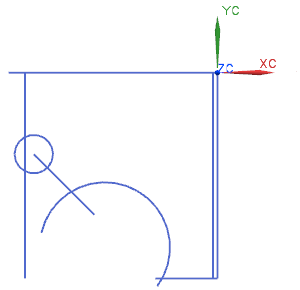
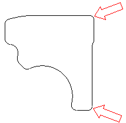
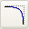
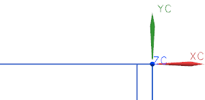

打开部件并创建简单圆角
-
打开 ffm3_profile_3，如果建模应用模块尚未激活，请开始建模应用模块。

您的下一个工作是要通过在一些拐角处添加圆角来修剪几何体。
-
选择插入→曲线→基本曲线。
-
在对话框中，确保线串模式复选框已被清除。

线串模式
-
在基本曲线对话框中，点击圆角
 。
。当您使用圆角命令来创建圆角时，跟踪条将不再显示，使用修剪命令时也同样如此。
-
在曲线倒圆对话框中，将光标移至方法按钮以查看创建圆角的方法的名称。
您可以从创建轮廓右侧顶部和底部的圆角开始。

可以使用创建圆角时自动修剪垂直和水平直线。
简单圆角  是默认激活的创建方法，简单圆角有一些独一无二的特性：
-
它们只能在两条直线间创建
-
您必须让选择球一次能选到所有两条直线
-
所有的两条直线都会被修剪到创建的圆弧处
如果上述任意特性不能在您创建的圆角中满足，使用2曲线圆角
 代替。
代替。当您创建一个圆角时，您需要指定起始的半径。
第一个圆角是一个在下侧水平直线和内侧竖直直线之间，半径为6 mm 的简单圆角。

-
-
在曲线倒圆对话框的半径输入框中，键入6，如果显示的是其它任何值。
您也可以通过点击继承生成半径，然后选择一个现有的圆弧、圆或者圆角。
-
移动光标到拐角处，确保两条直线都同时在选择球范围之内(哪一条是高亮显示无关紧要)，然后单击。
圆角直接被创建，并且所有直线都被修剪至圆弧。

-
如果您未得到正确的圆角，右击并选择撤销，然后重试。
-
放大到曲线的右上部。

-
当所有直线都在选择球内时，单击以创建圆角，确保另外一条竖直直线不在选择球内。

圆角已创建。
再重复一次，如果您没有得到正确的圆角，右击并选择撤销，然后重试。

-
在视图工具条上，点击适合窗口。